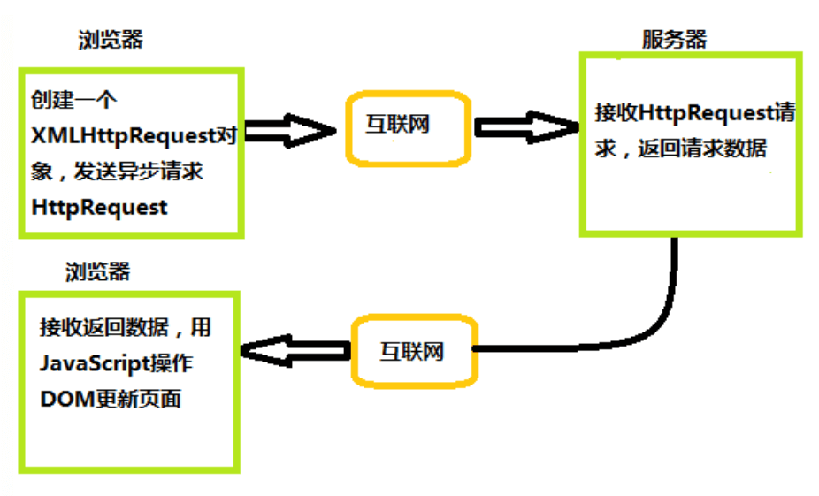
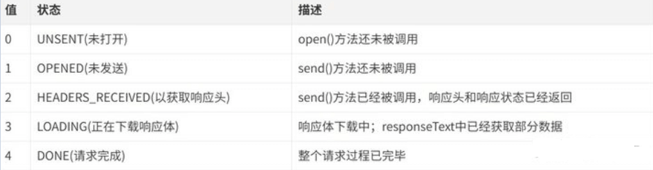

说说ajax的原理，以及如何实现？
参考答案
一、是什么
AJAX 全称(Async Javascript and XML)
即异步的 JavaScript 和 XML，是一种创建交互式网页应用的网页开发技术，可以在不重新加载整个网页的情况下，与服务器交换数据，并且更新部分网页
Ajax的原理简单来说通过XmlHttpRequest对象来向服务器发异步请求，从服务器获得数据，然后用JavaScript来操作DOM而更新页面
流程图如下：

下面举个例子：
领导想找小李汇报一下工作，就委托秘书去叫小李，自己就接着做其他事情，直到秘书告诉他小李已经到了，最后小李跟领导汇报工作
Ajax请求数据流程与“领导想找小李汇报一下工作”类似，上述秘书就相当于XMLHttpRequest对象，领导相当于浏览器，响应数据相当于小李
浏览器可以发送HTTP请求后，接着做其他事情，等收到XHR返回来的数据再进行操作
二、实现过程
实现 Ajax 异步交互需要服务器逻辑进行配合，需要完成以下步骤：
- 创建
Ajax的核心对象XMLHttpRequest对象
- 通过
XMLHttpRequest对象的open()方法与服务端建立连接
- 构建请求所需的数据内容，并通过
XMLHttpRequest对象的send()方法发送给服务器端
- 通过
XMLHttpRequest对象提供的onreadystatechange事件监听服务器端你的通信状态
- 接受并处理服务端向客户端响应的数据结果
- 将处理结果更新到
HTML页面中
创建XMLHttpRequest对象
通过XMLHttpRequest() 构造函数用于初始化一个 XMLHttpRequest 实例对象
const xhr = new XMLHttpRequest();与服务器建立连接
通过 XMLHttpRequest 对象的 open() 方法与服务器建立连接
xhr.open(method, url, [async][, user][, password])参数说明：
method：表示当前的请求方式，常见的有GET、POST
url：服务端地址
async：布尔值，表示是否异步执行操作，默认为true
user: 可选的用户名用于认证用途；默认为`null
password: 可选的密码用于认证用途，默认为`null
给服务端发送数据
通过 XMLHttpRequest 对象的 send() 方法，将客户端页面的数据发送给服务端
xhr.send([body])body: 在 XHR 请求中要发送的数据体，如果不传递数据则为 null
如果使用GET请求发送数据的时候，需要注意如下：
- 将请求数据添加到
open()方法中的url地址中 - 发送请求数据中的
send()方法中参数设置为null
绑定onreadystatechange事件
onreadystatechange 事件用于监听服务器端的通信状态，主要监听的属性为XMLHttpRequest.readyState ,
关于XMLHttpRequest.readyState属性有五个状态，如下图显示

只要 readyState 属性值一变化，就会触发一次 readystatechange 事件
XMLHttpRequest.responseText属性用于接收服务器端的响应结果
举个例子：
const request = new XMLHttpRequest()
request.onreadystatechange = function(e){
if(request.readyState === 4){ // 整个请求过程完毕
if(request.status >= 200 && request.status <= 300){
console.log(request.responseText) // 服务端返回的结果
}else if(request.status >=400){
console.log("错误信息：" + request.status)
}
}
}
request.open('POST','http://xxxx')
request.send()三、封装
通过上面对XMLHttpRequest 对象的了解，下面来封装一个简单的ajax请求
//封装一个ajax请求
function ajax(options) {
//创建XMLHttpRequest对象
const xhr = new XMLHttpRequest()
//初始化参数的内容
options = options || {}
options.type = (options.type || 'GET').toUpperCase()
options.dataType = options.dataType || 'json'
const params = options.data
//发送请求
if (options.type === 'GET') {
xhr.open('GET', options.url + '?' + params, true)
xhr.send(null)
} else if (options.type === 'POST') {
xhr.open('POST', options.url, true)
xhr.send(params)
//接收请求
xhr.onreadystatechange = function () {
if (xhr.readyState === 4) {
let status = xhr.status
if (status >= 200 && status < 300) {
options.success && options.success(xhr.responseText, xhr.responseXML)
} else {
options.fail && options.fail(status)
}
}
}
}使用方式如下
ajax({
type: 'post',
dataType: 'json',
data: {},
url: 'https://xxxx',
success: function(text,xml){//请求成功后的回调函数
console.log(text)
},
fail: function(status){////请求失败后的回调函数
console.log(status)
}
})